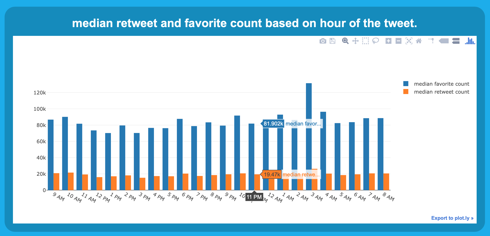

About me
My resume
Here are some of my projects
Prev
Next
or swipe left
Peer into your twitter data with over 15 different intuitive data visualizations
Learn more
|
Try it out!

SchedulingFor.me
Virtual Commodity Investor
Marino Navigator